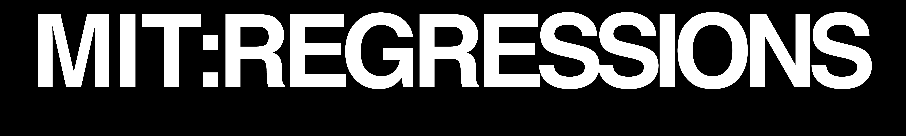

TRAILER
A history of the Institute.
MIT was founded in 1861. But our story begins in 1941. December 7th, 1941.
TRAILER
 @MITREGRESSIONS
@MITREGRESSIONS
 @MIT.REGRESSIONS
@MIT.REGRESSIONS
 SUBSCRIBE
SUBSCRIBE
 SOUNDTRACK
SOUNDTRACK
 hello@littlelink.io
hello@littlelink.io
©2022 REGRESSIONS, a registered 501(c)(3)
Created by Wes and Luke.